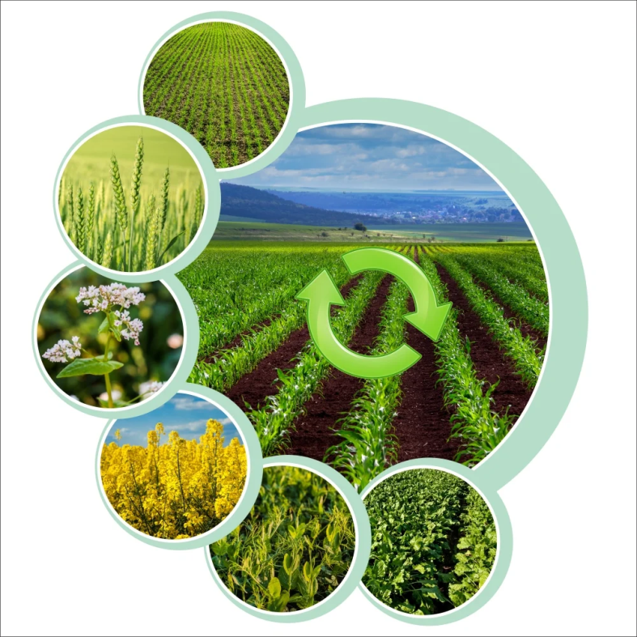

TENDÊNCIA DA TECNOLOGIA NA AGRICULTURA
CONCEITOS:
A agricultura é uma das atividades mais antigas e importantes da humanidade, e desde os primórdios, o homem busca formas de cultivar. Ao longo da história, essas práticas passaram por diversas transformações, acompanhando os avanços tecnológicos e as demandas da sociedade, assim a lavoura nunca mais foi a mesma. A história mostra que, de tempos em tempos, as inovações tecnológicas na agricultura propiciam a quebra de paradigmas no modelo de produção agrícola, a partir de novas técnicas e ferramentas digitais no campo. Essa implementação tem contribuído para aumentar a produtividade, reduzir os custos, melhorar a qualidade dos produtos e preservar a natureza.
No início do Século XXI, o modelo de produção agrícola, caracterizado pela Agricultura de Precisão, evoluiu rapidamente. Posteriormente, passam a ser usadas máquinas, veículos autônomos, drones, robôs com sensores, ou seja, a evolução da tecnologia na agricultura trouxe a mecanização, o que garantiu o aumento da produtividade e a geração de novos empregos. De acordo com dados disponibilizados a partir de uma parceria entre a Embrapa, o Serviço Brasileiro de Apoio às Micro e Pequenas Empresas (Sebrae) e o Instituto Nacional de Pesquisas Espaciais (Inpe). Aproximadamente 84% dos agricultores brasileiros já utilizam ao menos uma tecnologia digital para auxiliar na produção agrícola, através do uso de recursos como sensores, sistemas de integração de maquinários, GPS, drones, softwares para gestão agrícola, entre outras ferramentas inovadoras que contribuem para o negócio e otimizam a produção da lavoura.
Isso com o propósito de otimizar todas as etapas do processo produtivo, melhorar o monitoramento, a gestão e o controle do negócio, para que todas as inovações tecnológicas do agronegócio, estejam, cada vez mais, integradas e conectadas, em uma era em que a incorporação das tecnologias digitais no campo ganha uma velocidade surpreendente, não apenas pelos grandes produtores rurais, mas também pelos médios e pequenos agricultores.
IMPORTÂNCIA DA TECNOLOGIA:
A agricultura está conectada com um processo intenso de desenvolvimento tecnológico, fundamental para o desenvolvimento da agricultura moderna e sustentável. Ela traz novas ferramentas e soluções que ajudam a enfrentar os desafios do setor agrícola, como a crescente demanda por alimentos, a escassez de recursos naturais e principalmente, as mudanças climáticas que afetam o mundo inteiro.
De modo geral, essas inovações tecnológicas representam o futuro da agricultura, permitindo uma produção mais eficiente, sustentável e resiliente. A tecnologia na agricultura não só potencializa os resultados, mas também ajuda a enfrentar os desafios globais. E dessa forma, a modernização do campo se torna essencial para sustentar a produção e atender à crescente demanda, com o melhor controle de produção e qualidade, redução de custos, e o menor risco de erros nas operações, que passam a ser automatizadas com as inovações tecnológicas para a lavoura.
TECNOLOGIA USADA:

GPS AGRICOLA:
O GPS agrícola é um sistema de posicionamento global que permite localizar com precisão os pontos de interesse nas propriedades rurais, como os talhões, as estradas, os depósitos, os pivôs de irrigação, entre outros. Ele também possibilita o uso de máquinas agrícolas guiadas por GPS, que realizam operações como o plantio, a pulverização e a colheita de forma automatizada e otimizada, reduzindo custos e desperdícios.
Tecnologias TOTVS:
O sistema TOTVS para o agronegócio é o software com tecnologia de ponta que aumenta a produtividade e otimiza as operações, controlando todas as atividades de produção de cultivos da sua propriedade e tem flexibilidade para atender cada uma delas. Ele também automatiza todas as etapas do processo, do plantio à colheita, além de administrar todos os recursos consumidos e horas que foram gastas com o preparo do solo e das culturas, por exemplo.
ROBÓTICA:
A robótica é o ramo da tecnologia que desenvolve máquinas capazes de realizar tarefas complexas de forma autônoma. Na agricultura, os robôs podem substituir ou auxiliar o trabalho humano em diversas atividades, como o plantio, a poda, a colheita, a ordenha, entre outros - Eles também podem realizar tarefas que exigem mais precisão ou que envolvem riscos para os trabalhadores, como a detecção e a eliminação de ervas daninhas ou de pragas.
SENSORES:
Os sensores são dispositivos que captam informações sobre variáveis físicas ou químicas do ambiente, como a temperatura, a pressão, a luminosidade, a umidade, o pH, entre outros. Eles estão presentes em tratores e podem ser instalados no solo, nas plantas, nos animais ou nas máquinas agrícolas, transmitindo os dados coletados para uma central de processamento ou para um dispositivo móvel - Os sensores permitem um acompanhamento contínuo e em tempo real das condições das lavouras e dos rebanhos, facilitando o diagnóstico e a solução de problemas.
SUSTENTABILIDADE NO CAMPO
CONCEITOS:
A sustentabilidade no campo é o compromisso de produzir alimentos, fibras e energia de forma a preservar os recursos naturais, proteger a biodiversidade e promover o equilíbrio ambiental. No agronegócio, isso significa adotar práticas que respeitem os ciclos naturais do solo, da água e do clima, com o objetivo de garantir que as gerações futuras também possam contar com um ambiente saudável e produtivo.
Na AgroVision, sustentabilidade é mais do que uma tendência; é uma prioridade. Trabalhamos para que cada tecnologia desenvolvida apoie a eficiência e o uso responsável dos recursos naturais, ajudando agricultores a produzirem mais com menos impacto. Essa abordagem abrange desde o monitoramento por drones, que permite uma visão detalhada das plantações sem comprometer o meio ambiente, até sistemas de irrigação inteligente que economizam água e energia.
VANTAGENS
DEFEITOS
COMO SE APLICA:
A sustentabilidade no agronegócio envolve várias práticas e tecnologias que tornam a produção agrícola mais responsável e eficiente. Abaixo, estão algumas das principais soluções da AgroVision para um agronegócio sustentável:
-
Em vez de realizar pulverizações generalizadas, o agricultor pode usar o
drone para identificar áreas específicas que realmente precisam de atenção,
reduzindo o uso de defensivos e promovendo um manejo mais sustentável.
-
O sistema de irrigação da AgroVision é controlado remotamente e coleta
dados climáticos em tempo real, permitindo que o agricultor reduza o uso de água em até 30% sem comprometer a produtividade das culturas.
-
A rotação de culturas impede que o solo se desgaste e perca nutrientes rapidamente, contribuindo para um ecossistema agrícola mais equilibrado e menos dependente de insumos químicos.
